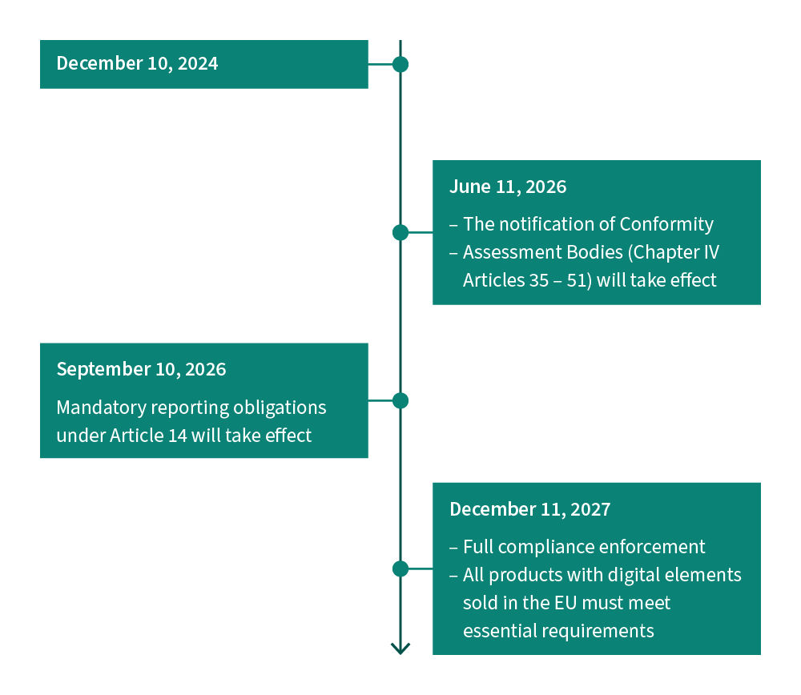
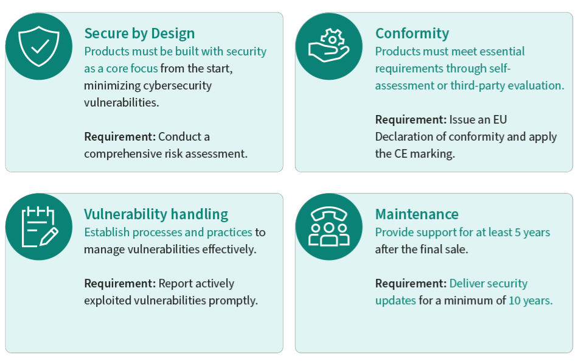

2024年12月10日，欧盟《网络弹性法案》（Cyber Resilience Act，简称 CRA）正式在欧盟官方公报发布并生效。这是全球首部针对所有含数字元素的产品的横向网络安全立法，覆盖范围远超既有行业法规。
一句话理解CRA：
凡是带芯片、能联网、在欧盟卖的产品，从2027年12月11日起，必须满足"设计即安全、默认即安全"的强制性网络安全要求，加贴CE标识方可上市。
CRA直接影响全球半导体产业链：芯片原厂、模组厂商、终端设备制造商、进口商、分销商全链条担责。Nordic、Renesas、TI、Infineon、ST、NXP 等主流半导体厂商已在官网设立CRA合规专题页面，向客户传递合规承诺与技术支持方案。
本文结合欧盟CRA法规原文与五大半导体厂商官网CRA专题页面，系统梳理CRA核心要求、时间线、厂商合规方案及对产业的影响。
核心结论前置：
CRA不是可选合规，而是市场准入门槛。不合规 = 不能在欧盟卖。2027年12月11日全面实施前，所有面向欧盟市场的数字产品必须完成安全设计改造、漏洞管理流程建设、SBOM生成、CE符合性评定。半导体厂商正在成为下游客户合规的"第一道防线"。
《网络弹性法案》（Cyber Resilience Act，Regulation (EU) 2024/2847）是欧盟颁布的横向网络安全法规，为所有在欧盟单一市场内销售的、含数字元素的产品制定基本网络安全要求。
| 目标维度 | 具体内容 |
|---|---|
| 统一市场规则 | 消除成员国碎片化网络安全法规，建立统一的CE符合性评定框架 |
| 安全设计强制 | 产品必须"设计即安全"（Security by Design）、"默认即安全"（Security by Default） |
| 全生命周期安全 | 安全要求覆盖设计、开发、生产、上市、运营、维护、退役全周期 |
| 漏洞透明管理 | 制造商发现被利用漏洞后24小时内上报CSIRT/ENISA，72小时内提交修复方案 |
| 供应链透明 | 强制提供SBOM（软件物料清单），声明开源组件与依赖关系 |
CRA适用于所有含数字元素的硬件和软件产品，能够直接或间接连接设备或网络，且在欧盟单一市场内销售。
适用产品示例：
不适用（豁免）领域：
| 豁免类型 | 原因 |
|---|---|
| 非商业项目 | 个人开发、科研用途不在监管范围 |
| 无物理组件的纯云服务 | 由NIS2指令覆盖 |
| 汽车 | 由UN-R155/156法规覆盖 |
| 医疗器械 | 由MDR/IVDR法规覆盖 |
| 航空航天 | 由EASA相关法规覆盖 |
| 类别 | 风险等级 | 符合性评定方式 | 典型产品 |
|---|---|---|---|
| 默认类（Default） | 较低 | 制造商自我声明 | 智能音箱、家用传感器、普通IoT设备 |
| 重要类（Class I） | 较高 | 第三方通报机构评定 | 工业控制设备、网络基础设施、安全设备 |
| 关键类（Class II） | 最高 | 第三方通报机构评定 | 关键基础设施设备、高端安全产品 |
| 时间节点 | 事件 |
|---|---|
| 2024年11月20日 | 法规在欧盟官方公报发布 |
| 2024年12月10日 | 法规正式生效 |
| 2026年6月11日 | 第四章（第35–51条）符合性评定机构通报规定开始施行 |
| 2026年9月11日 | 第14条漏洞和事件报告义务开始施行 |
| 2027年12月11日 | CRA主要义务全面实施，所有在欧盟销售的数字产品必须加贴CE标识 |
关键提醒： 2026年9月11日起，制造商发现产品被利用的安全漏洞必须在24小时内上报，这意味着漏洞管理流程必须在2026年9月前建设完成。
CRA附件I规定了产品必须满足的基本网络安全要求，核心可归纳为：
| 要求领域 | 具体要求 |
|---|---|
| 安全设计 | 产品不得有已知可利用漏洞；默认配置即安全；最小权限原则 |
| 安全启动 | 确保只有经过授权的软件才能在产品上运行 |
| 安全通信 | 数据传输必须使用加密、完整性保护、认证机制 |
| 安全存储 | 敏感数据（密钥、凭证）必须加密存储、隔离保护 |
| 访问控制 | 防止未经授权的物理和逻辑访问 |
| 安全更新 | 必须支持自动安全更新，更新过程不得引入新漏洞 |
| 漏洞管理 | 建立漏洞发现、评估、上报、修复流程；24小时上报、72小时修复 |
| SBOM | 提供软件物料清单，声明所有组件及依赖关系 |
| 日志与审计 | 记录安全相关事件，支持事后调查 |
| CE标识 | 通过符合性评定后加贴CE标识，出具EU符合性声明 |
以下为各大半导体厂商官网CRA专题页面的核心内容梳理。所有内容均来自厂商官网公开信息，链接附后。
| 厂商 | 官网链接 | 页面状态 |
|---|---|---|
| Nordic 半导体 | https://www.nordicsemi.cn/protocols/cyber-resilience-act/ | 已抓取 |
| Renesas 瑞萨 | https://www.renesas.cn/zh/key-technologies/security/cyber-resilience-act-cra | 已抓取 |
| TI 德州仪器 | https://www.ti.com.cn/zh-cn/technologies/security/cyber-resilience-act.html | 已抓取 |
| Infineon 英飞凌 | https://www.infineon.cn/quality/security/security-standards/eu-cra | 已抓取 |
| ST 意法半导体 | https://wiki.st.com/stm32mcu/wiki/Security:Q%26A_for_CRA | 链接超时，无法抓取 |
| NXP 恩智浦 | https://www.nxp.com.cn/applications/technologies/security/eu-cyber-resilience-act-cra:CYBER-RESILIENCE-ACT | 链接404，无法抓取 |
官网链接：https://www.nordicsemi.cn/protocols/cyber-resilience-act/
Nordic官网明确指出：CRA为欧盟单一市场内的物联网、智能家居设备及所有数字产品制定了基本网络安全标准。CRA强制要求产品"设计即安全"、"默认即安全"，并确保安全贯穿产品全生命周期。
| 主体 | 责任 |
|---|---|
| 制造商 | 产品安全设计、漏洞管理、SBOM、CE符合性评定、技术文档 |
| 进口商 | 验证制造商已履行合规义务、保留符合性声明副本 |
| 分销商 | 确保产品带有CE标识、存储运输条件不影响合规 |
Nordic将CRA安全要求归纳为：
Nordic强调其 nRF Cloud 云服务为设备制造商提供CRA合规所需的关键能力：
| nRF Cloud能力 | 对应CRA要求 |
|---|---|
| OTA固件升级 | 安全更新机制（CRA附件I） |
| 设备监控 | 漏洞发现与事件报告（第14条） |
| 生命周期透明性 | 产品维护周期声明、SBOM管理 |
| 安全通信 | 加密传输、设备认证 |
官网链接：https://www.renesas.cn/zh/key-technologies/security/cyber-resilience-act-cra
Renesas官网将CRA基本安全要求清晰归纳为五大技术要求：
| 序号 | 安全要求 | 说明 |
|---|---|---|
| 1 | 安全固件更新 | 设备必须支持安全OTA更新，更新包经过签名验证，更新过程不中断设备功能 |
| 2 | 未经授权访问保护 | 防止物理和逻辑层面的未授权访问，包括调试接口保护、权限隔离 |
| 3 | 安全数据存储 | 敏感数据（密钥、凭证、用户数据）加密存储，硬件隔离安全区 |
| 4 | 安全通信 | 所有网络通信使用加密、认证、完整性保护（TLS/IPsec） |
| 5 | 安全启动 | 固件启动链逐级验签，确保只有可信软件运行 |
| 日期 | 事件 |
|---|---|
| 2024年12月10日 | CRA法规正式生效 |
| 2026年9月11日 | 漏洞和事件报告义务开始施行 |
| 2027年12月11日 | CRA主要义务全面实施 |
Renesas官网明确承诺：
官网链接：https://www.ti.com.cn/zh-cn/technologies/security/cyber-resilience-act.html
TI官网详细列出了CRA的适用与不适用范围：
适用产品：
不适用产品：
| 豁免领域 | 已有法规 |
|---|---|
| 汽车 | UN-R155 / UN-R156 |
| 医疗器械 | MDR (EU 2017/745) / IVDR |
| 航空航天 | EASA法规 |
| 纯云服务 | NIS2指令 |
| 时间 | 里程碑 |
|---|---|
| 2024年12月10日 | 法规生效 |
| 2026年9月11日 | 漏洞报告义务生效（第14条） |
| 2027年12月11日 | 主要义务全面实施，CE标识强制 |
TI将CRA对产品的核心要求归纳为：
TI官网描述了CRA要求的漏洞处理流程：
漏洞发现 → 24小时内上报CSIRT/ENISA → 评估影响 → 72小时内提交修复方案 → 发布安全更新 → 闭环验证
TI强调CRA对产品信息和标记的要求：
TI官网强调其在网络安全方面的长期承诺：
| 承诺维度 | 具体内容 |
|---|---|
| TÜV SÜD认证 | TI的网络安全流程通过TÜV SÜD认证 |
| PSIRT | 设立产品安全事件响应团队，负责漏洞接收、评估、响应 |
| 安全开发生命周期 | 遵循安全开发流程，从设计阶段纳入安全 |
| 客户支持 | 提供CRA合规技术支持和指导 |
官网链接：https://www.infineon.cn/quality/security/security-standards/eu-cra
英飞凌官网以**"今日筑牢安全，明日从容合规"为核心主张，依托"设计即安全"（Design for Security）**解决方案，帮助客户打造满足CRA要求的联网设备。
英飞凌CRA专题页头图：以"今日筑牢安全，明日从容合规"为核心主张。
英飞凌官网原文：
《欧盟网络弹性法案》（CRA）为欧盟单一市场内的物联网、智能家居设备及所有数字产品制定了基本网络安全标准。CRA强制要求产品"设计即安全"、"默认即安全"，并确保安全贯穿产品全生命周期。
适用范围： 大多数包含数字元素的硬件和软件
不适用：

英飞凌官网展示的CRA关键时间轴：2024年12月10日生效 → 2026年9月11日漏洞报告 → 2027年12月11日全面实施。

英飞凌官网展示的CRA规定的制造商责任图：覆盖安全设计、漏洞管理、SBOM、CE标识、生命周期维护等全链条义务。
英飞凌官网明确承诺：
英飞凌致力于帮助客户不仅满足CRA合规要求，更将其转化为增长引擎，助力客户在各自行业中占据市场领先地位。
英飞凌的独特优势：
英飞凌提供五大板块的CRA合规支持：
| 板块 | 内容 |
|---|---|
| 01 欧盟CRA入门指南 | 精选核心资源：专家洞见、实用工具、可落地的合规指引 |
| 02 专家洞见 | 网络研讨会、播客：解读CRA核心要求、标准化进展、合规策略 |
| 03 产品与CRA合规类别对标 | 英飞凌全产品线与CRA合规类别对照表 |
| 04 常见问题 | CRA实施时间、适用范围、不合规处罚、标准制定等FAQ |
| 05 资料中心 | CRA法规原文、白皮书、技术文档 |
| 问题 | 回答 |
|---|---|
| CRA何时正式实施？ | 2027年12月11日全面实施；2026年6月11日符合性评定机构通报规定施行；2026年9月11日报告义务施行 |
| CRA涵盖哪些设备？ | 所有在欧盟单一市场内销售的、配备硬件和软件的联网数字设备和组件 |
| 不合规面临何种处罚？ | 制造商可能被处以巨额罚款及其他处罚 |
| 谁来制定技术标准？ | 欧洲标准化组织 CEN-CENELEC 和 ETSI 负责制定协调欧洲标准 |
| 如何确保设备合规？ | 查阅欧盟指南及法规文件，与英飞凌等安全专家合作 |
| CE符合性测试目录何时完成？ | CENELEC制定，部分领域测试目录初稿预计2025年底前出炉 |
ST在STM32 Wiki上设立了CRA专题页面：
注：截至本文编写时，上述Wiki链接访问超时，未能获取页面内容。ST作为STM32全球最大MCU供应商，其CRA合规方案对下游客户影响重大，建议关注ST官方渠道的最新更新。
NXP中文官网设立了CRA专题页面：
注：截至本文编写时，上述链接返回404错误，页面可能已迁移或下线。NXP作为车规芯片和工业MCU主要供应商，其CRA合规方案建议关注NXP官方渠道的最新更新。
| 维度 | Nordic | Renesas | TI | Infineon |
|---|---|---|---|---|
| 官网专题页 | 有 | 有 | 有 | 有 |
| 安全要求归纳 | 设计即安全、默认即安全 | 五大技术要求 | 安全设计+漏洞管理+SBOM | 设计即安全 |
| 时间线梳理 | 有 | 有 | 有 | 有 |
| 适用范围说明 | 有 | 有 | 有（含豁免） | 有（含豁免） |
| 漏洞处理流程 | 24h上报+72h修复 | 有 | 24h上报CSIRT+72h修复 | 有 |
| 合规工具/服务 | nRF Cloud OTA/监控 | 合作伙伴方案 | TÜV SÜD认证+PSIRT | 全产品线对标+专家洞见 |
| 标准化参与 | — | — | — | CRA委员会重要角色 |
| 客户支持方式 | 云服务赋能 | 技术文档+指南 | 技术支持+PSIRT | 入门指南+网络研讨会+播客 |
| 独特优势 | nRF Cloud一站式合规 | 五大要求清晰归纳 | TÜV SÜD流程认证 | 标准化委员会深度参与 |
| 影响维度 | 具体影响 |
|---|---|
| 市场准入 | 2027年12月11日后，不合规产品无法在欧盟市场销售，CE标识成为硬门槛 |
| 合规成本 | 安全设计改造、漏洞管理流程建设、SBOM工具链、第三方符合性评定，均需投入 |
| 供应链责任 | 制造商、进口商、分销商全链条担责，需向上游索取合规证据、向下游传递合规信息 |
| 产品生命周期 | 必须声明安全更新支持周期（至少5年），影响产品退役策略 |
| 违规处罚 | 不合规可被处以巨额罚款及产品下架、市场禁入等处罚 |
| 竞争格局 | 合规能力成为竞争壁垒，先行合规者获得市场先发优势 |
| 影响维度 | 具体影响 |
|---|---|
| 安全设计前置 | 安全从"事后补丁"变为"设计即安全"，需在架构阶段纳入威胁建模、安全分析 |
| 安全功能要求 | 安全启动、安全通信、安全存储、访问控制、安全更新成为标配功能 |
| 漏洞管理流程 | 必须建立PSIRT/CSIRT，漏洞发现→评估→上报→修复→发布全流程 |
| SBOM工具链 | 必须建立软件物料清单生成与管理工具链，声明所有组件及依赖 |
| 文档与审计 | 需编制技术文档、符合性声明、安全评估报告，支持CE评定审计 |
| 开发流程改造 | 引入SSDLC（安全软件开发生命周期），代码审查、安全测试常态化 |
| 影响维度 | 具体影响 |
|---|---|
| 产品安全性提升 | 所有在欧盟销售的数字产品默认达到基本安全标准，用户无需自行加固 |
| 漏洞透明度 | 制造商必须公开漏洞处理情况，用户可知情决策 |
| 安全更新保障 | 产品至少5年内可获得安全更新，降低长期安全风险 |
| CE标识信任 | CE标识成为产品安全可信的标志，降低用户选购风险 |
| 隐私保护增强 | 安全通信、安全存储要求间接增强用户数据隐私保护 |
从现在到2027年12月11日，只有约15个月窗口期。 考虑到安全设计改造、漏洞流程建设、第三方评定周期，实际留给产品改造的时间更为紧迫。
| 阶段 | 时间 | 行动 |
|---|---|---|
| 阶段一：评估 | 立即 | 梳理产品线，确定CRA适用范围与风险类别（默认/重要/关键） |
| 阶段二：差距分析 | 2025Q4 | 对照CRA附件I基本要求，分析现有产品安全能力差距 |
| 阶段三：安全改造 | 2026Q1–Q3 | 安全启动、安全通信、安全存储、访问控制、安全更新功能开发 |
| 阶段四：流程建设 | 2026Q1–Q2 | 建立漏洞管理流程、PSIRT、SBOM工具链、SSDLC |
| 阶段五：漏洞上报就绪 | 2026年9月前 | 漏洞上报流程就绪，对接CSIRT/ENISA |
| 阶段六：符合性评定 | 2027Q1–Q3 | 完成CE符合性评定（自我声明或第三方通报机构评定） |
| 阶段七：全面合规 | 2027年12月11日前 | 所有产品加贴CE标识，出具EU符合性声明 |
在CRA合规背景下，芯片选型应增加安全维度考量：
| 选型维度 | 建议关注点 |
|---|---|
| 安全硬件能力 | 硬件隔离安全区（TrustZone/SE）、安全启动支持、加密加速引擎 |
| 安全固件支持 | 厂商是否提供安全OTA方案、是否有CRA合规技术支持 |
| SBOM支持 | 厂商是否提供芯片级SBOM、开源组件声明 |
| 漏洞响应 | 厂商是否有PSIRT、漏洞响应SLA、安全更新承诺周期 |
| 合规文档 | 厂商是否提供CRA合规指南、安全评估报告 |
| 合规生态 | 厂商是否有合规合作伙伴、第三方评定支持 |
CRA是全球首部针对所有数字产品的横向网络安全立法，其影响深远：
市场准入重构： CE标识从"自愿性安全声明"升级为"强制性网络安全门槛"，不合规即不能在欧盟市场销售。
安全范式转变： 从"事后补丁"到"设计即安全"，安全成为产品设计的起点而非终点。
全链条责任： 芯片原厂、设备制造商、进口商、分销商全链条担责，半导体厂商成为下游合规的第一道防线。
时间窗口紧迫： 2026年9月漏洞上报义务生效，2027年12月全面实施，留给产业改造的时间不足15个月。
厂商积极应对： Nordic、Renesas、TI、Infineon等主流半导体厂商已全面布局CRA合规支持，从安全硬件能力、合规工具链、技术文档到标准化参与，为客户提供端到端合规赋能。
CRA不是合规终点，而是安全新纪元的起点。 对嵌入式产业而言，谁能率先完成安全能力建设与合规改造，谁就能在欧盟市场乃至全球市场占据先发优势。